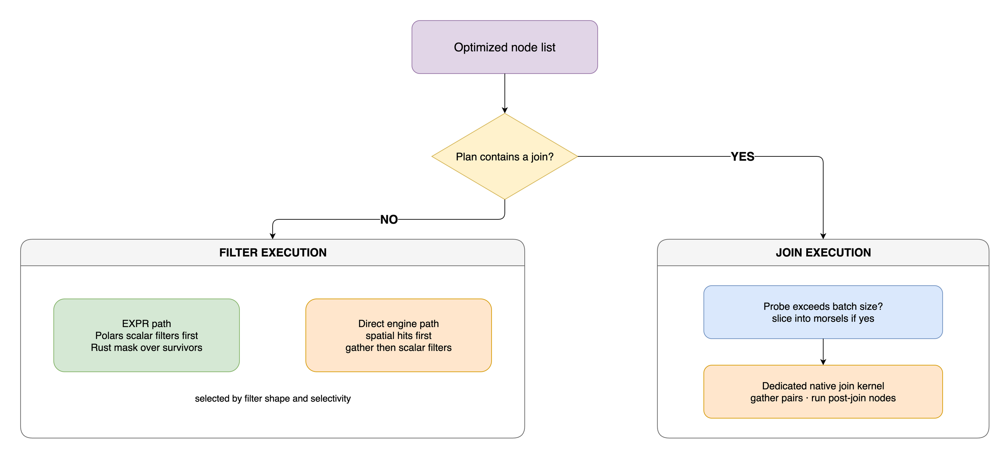
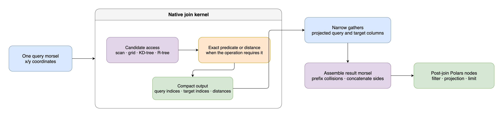

Query Execution
SpatialExecutor walks the optimized node list and coordinates Polars with the native engine.
Filter plans and join plans follow different routes.

Filter plans
Expression path
The EXPR path lets Polars reduce rows before a point spatial predicate runs:
- Add a temporary original-row index.
- Apply scalar Polars filters.
- Pass surviving original-row indices to Rust through
map_batches. - Evaluate the spatial predicate over those candidates.
- Return a Boolean mask aligned with the surviving rows.
The callback is a Python function inside a Polars lazy expression. It is not a native Polars expression plugin. The engine does not build a temporary index over the filtered subset.
Direct engine path
The IO path starts with the complete native engine:
- Resolve each supported spatial predicate to original-row indices.
- Intersect multiple hit lists in native code.
- Gather the matching
SpatialFramerows once. - Apply scalar filters and a terminal limit to the gathered DataFrame.
The optimizer selects this route for sufficiently selective range or containment filters. Polygon filter plans also use it because polygon geometry is not available as Polars coordinate columns.
“Direct engine” describes how results reconnect to Polars. The kernel may still scan, reuse an index, or build an index according to the native access-path planner.
kNN filters
kNN does not use the general IO selection rule. With an earlier scalar filter, Rust scans the
surviving row indices and marks the nearest k. Without an earlier scalar filter, the engine runs
a global kNN query and the executor filters by its returned indices.
Join plans
Join nodes call dedicated native batch kernels. Each kernel returns query-side and target-side row indices, plus distances where the operation defines them. The executor then:
- gathers only the projected columns from each side;
- prefixes conflicting target names with
right_; - concatenates the two gathered sides horizontally; and
- applies post-join nodes to the assembled result.
Large probe sides are divided into morsels. Small joins use the same kernel and assembly path in a single call.

Inside a native kernel
The exact stages depend on the operation and selected access path:
- A scan or spatial index produces candidates
- Bounding boxes can discard candidates before exact geometry work
- Point-in-polygon uses prepared polygon bands for exact containment
- Polygon distance and polygon kNN refine candidates with exact geometry distance
- Eligible grouped joins update aggregate state instead of returning match pairs
- Long-running Rust sections release the Python GIL and use Rayon where parallel work pays
Copies and shared buffers
- Coordinate constructors normalize inputs to contiguous NumPy arrays and copy them into Rust-owned storage
- Point WKB uses NumPy buffer decoding for the common format; polygon WKB can decode from Arrow buffers in Rust
- Native kernels return arrays of indices, masks, distances, or aggregate state
- Engine point coordinates can be exposed as read-only NumPy and Polars views without another coordinate copy
Shared coordinate views do not make the whole query zero-copy. Row gathers, index builds, input normalization, polygon subsets, and result construction can allocate.